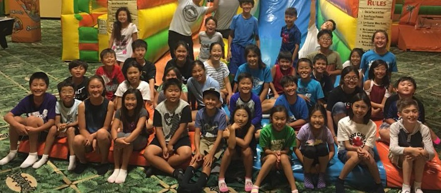

Home
After School
Summer School
Contact Us

English - Math - Sports
TUY was established in 1994, offering services from school pickups to after-school tutoring to help students with their homework, reading, writing, and math enrichment in a small-group setting. Our qualified and caring tutors are dedicated to give students the time and attention needed to nurture their unique style and accomplish their learning goals.
- Pick up from school
- Open until 7:00 PM
- Classes divided by grade (K-8)
- Complete homework helper
- Reading, writing, math enrichment classes
- Private tutoring, piano, special lessons available
- Large grass field for outdoor fun and sports
- Open all day on Student Free Days & non-major holidays
- Current teacher at Victor Elementary School Torrance
- B.A. in Elementary Education from the University of Southern California
- M.A. from Arkansas State University
- Credentials from CSU Northridge